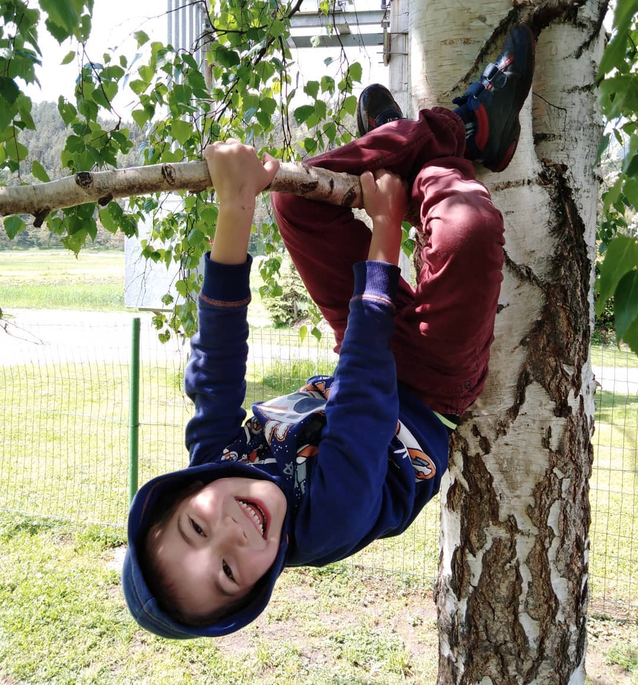

Grilované kurča podľa @prisnamatka — Normy Jedál
Nepamätám si, že by som niekedy deťom do školy v júny obliekala vetrovky (možno preto, že toto je prvý jún, odkedy máme školáka 🤔😂). No dnes to konečne vyzeralo na mierne oteplenie s nepatrným náznakom príchodu leta. A čo sme urobili my? Samozrejme sme sa zavesili na strom 👍😁💪🌳
#grilovanekurca #visimsinastrome #nastrome #nakonari #mojsyn #myson #mojchlapec #mojvelkychlapec #myboy